Hiraal Lifecare
| Version | 2.0 (full coverage) |
| Date | August 2026 |
| App build | app-release.apk — release-signed (CN=Hiraal Lifecare), production config |
| Backend | https://uat.dagaartech.com (UAT) · module: hiraal_emr (main @ 27a9474+) |
| Audience | QA testers (app) + ERPNext verifier + developers |
Contents
| Part 0 — Environments, roles & one-time setup |
| Part 1 — App tests: A Auth & onboarding · B Home & readings · C BLE devices · D History, charts & summary · E Services (doctors, labs, orders, video) · F Payments & receipts · G Subscription & paywall · H Profile & settings · I Notifications · J Offline & sync · K Alerts · L Sessions & errors · M Accessibility · N Secondary screens |
| Part 1B — Clinical staff experience (ERPNext desk): doctor, nurse, pharmacist, lab tech, admin |
| Part 2 — ERPNext module tests: N Auth/OTP API · O Readings ingestion · P Payments & settlement chain · Q Orders lifecycle · R Labs & appointments · S Subscriptions & billing · T Notifications & push · U Permissions & security · V Dashboards & reports · W Scheduled jobs |
| Part 3 — Regression checklist (this release's fixed-bug classes) |
| Part 4 — Known limitations & how to report a bug |
Part 0 — Environments, roles & one-time setup
0.1 Roles
| Role | Responsibility |
|---|---|
| App tester | Uses the Android phone: signs in, measures, orders, pays. |
| ERPNext verifier | Logged into uat.dagaartech.com; confirms records actually arrive (Daily Reading, Medicine Request, Care Subscription, Subscription Payment, Notification Log, Hiraal Push Token, Patient Device). |
| Admin | Runs bench commands for module tests (Part 2) and creates practitioners/patients as needed. |
0.2 One-time setup
| # | Step | Why |
|---|---|---|
| 0.1 | Uninstall older Hiraal builds, then install the release APK. | Release-signed builds can't upgrade over debug-signed ones. |
| 0.2 | Grant Nearby devices (Bluetooth), Location, Notifications when asked. | BLE scan/connect and alerts depend on them. |
| 0.3 | Bluetooth ON; devices charged, unpaired from other apps/phones, and close by. | A BLE device stops advertising while connected elsewhere — force-close vendor apps (e.g. Andesfit) first. |
| 0.4 | Verifier: open the lists Daily Reading, Chronic Care Alert, Medicine Request, Care Subscription, Subscription Payment, Notification Log. | These are the "source of truth" for most tests. |
| 0.5 | Have a registered test patient (phone + email) and a small mobile-money wallet (ZAAD/eDahab). Payments are live — use the smallest possible amounts. | End-to-end tests move real money. |
0.3 Environments
| Environment | How to get it | Notes |
|---|---|---|
| Live (UAT) | Default release APK build | Real OTP (SMS/email), real payments, real server data. |
| Mock (offline demo) | Dev build with --dart-define=USE_MOCK=true | No backend needed; all data is simulated. Use for UI regression only. |
| Web debug harness | dart tools/uat_proxy.dart + web build pointing at localhost:8090 | Single-origin proxy to UAT with full request/response logging — fastest way to see exact server errors. |
0.4 Supported devices (BLE)
Standard Bluetooth SIG profiles (Blood Pressure 1810/2A35, Glucose 1808/2A18, Weight Scale 181D/2A9D) and Andesfit B180 (proprietary fff0). Built-in name detection covers: Omron, A&D (UA-651), Accu-Chek, Contour, Andesfit. Detection order: advertised name/UUIDs → GATT table re-detect → per-characteristic fallback.
Part 1 — App tests
A. Authentication & onboarding
| ID | Action | Expected result | Verify in ERPNext |
|---|---|---|---|
| A-01 | Open app fresh (no session). | Splash → welcome screen (no hang; a corrupted local DB must fall back to welcome, not hang forever). | — |
| A-02 | Sign in with a registered phone number via SMS OTP. | Code arrives; entering it signs in. Active subscriber → Home; no active plan → paywall; never-registered → "No patient record found". | — |
| A-03 | Sign in via Email OTP (choose Email channel, enter the email on file). | Code is emailed (only if the email belongs to a registered patient); masked address shown (e.g. k***@x.com); sign-in works. | — |
| A-04 | Enter a wrong/expired OTP. | Clear "invalid or expired" error; the Verify button stops spinning (no permanent spinner on error). | — |
| A-05 | Sign up a brand-new patient (name, gender, DOB, phone, optional email). | OTP → account created → routed to plan selection (paywall). | New Patient record, status Active, matching name/sex/DOB/mobile. |
| A-06 | Sign up again with the same phone. | Signs into the existing account — no duplicate patient. | Still exactly one Patient with that mobile. |
| A-07 | Country code picker: verify Oman = +968, Sweden = +46 (previously wrong). | Correct codes in both signup and register screens. | — |
| A-08 | With biometrics enrolled: close the app fully, reopen. | Biometric unlock prompt (or straight to Home if biometrics unavailable); no OTP re-request. Session restores patient data. | — |
| A-09 | Session-expired screen (after 30 min inactivity trigger): "Log In Again" with biometrics available. | Biometric success → sign-in flow; failure stays on the screen with a message. "Back to Welcome" actually returns to welcome. | — |
| A-10 | Same on a device without biometrics. | "Log In Again" proceeds to the OTP login (user is not stranded). | — |
| A-11 | Registration success: names with double/trailing spaces (e.g. "Ali Omar") throughout signup → Home. | Avatar initials never crash (no red screen) on Home, Services, Profile, success screen. | — |
| A-12 | Sign out from Profile. | Returns to sign-in; double-tapping Sign out doesn't crash (busy guard). | Push tokens for this device disabled (Hiraal Push Token: enabled=0). |
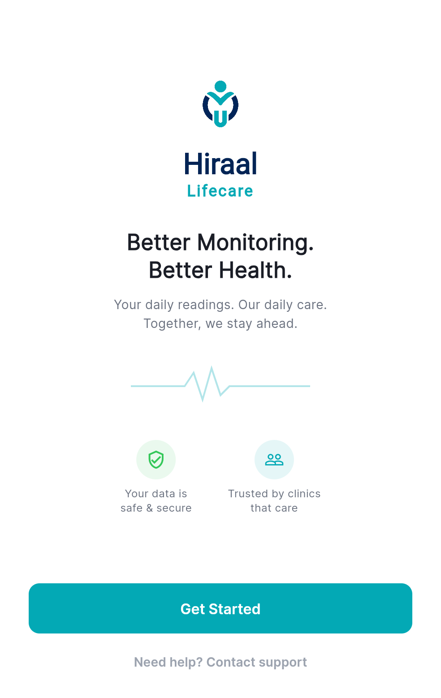
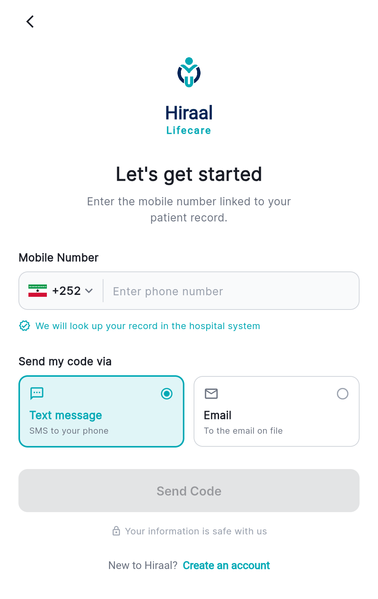
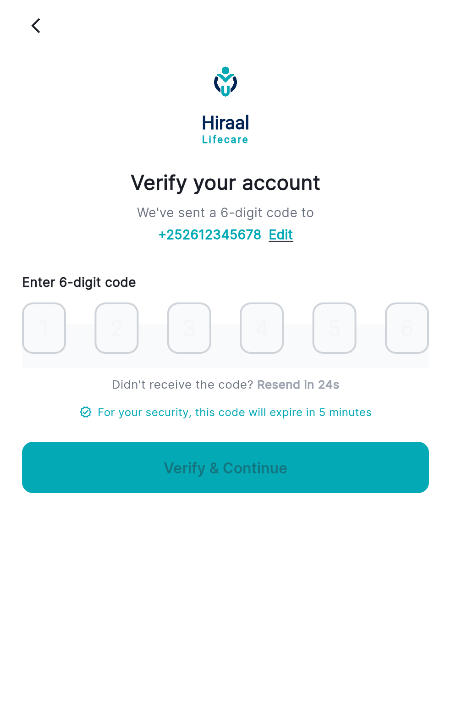
Welcome → sign in (SMS or email OTP) → code entry.
B. Home & manual readings
| ID | Action | Expected result | Verify in ERPNext |
|---|---|---|---|
| B-01 | Submit a manual BP reading (e.g. 128/82) + sugar + weight + "medicine taken". | Success view with pop-in check + haptic; greeting matches time of day; reading appears in History immediately. | One Daily Reading, Source = App, correct values, Medicine Taken matches. |
| B-02 | Enter weight 72.5 (with a decimal point). | Decimal input is accepted (not blocked by digits-only keyboard). | Weight stored as 72.5. |
| B-03 | Double-tap Submit fast. | Only one reading saved. | Exactly one Daily Reading. |
| B-04 | Submit while offline (airplane mode), then go online. | Reading saved locally as Pending; syncs automatically when back online (also see J-02). | Row appears after reconnect, once. |
| B-05 | "Last Submitted" card after B-04 (pending readings exist). | Shows the newest reading, not the oldest pending one. | — |
| B-06 | With an order in Awaiting Payment: check Home. | Amber "Payment pending" banner with order id + amount; tapping it opens the payment screen. | — |
| B-07 | With a booked appointment: check Home. | "Next appointment" card (practitioner, date, time); tapping opens My Appointments. Hidden when none. | — |
| B-08 | Home initial load on a slow connection. | Skeleton shimmer shows instead of blank/spinner. | — |
| B-09 | Connected BLE device: check Home's Connect Device tile. | Green "Connected" state reflects the real BLE connection (no longer hardcoded false). | — |
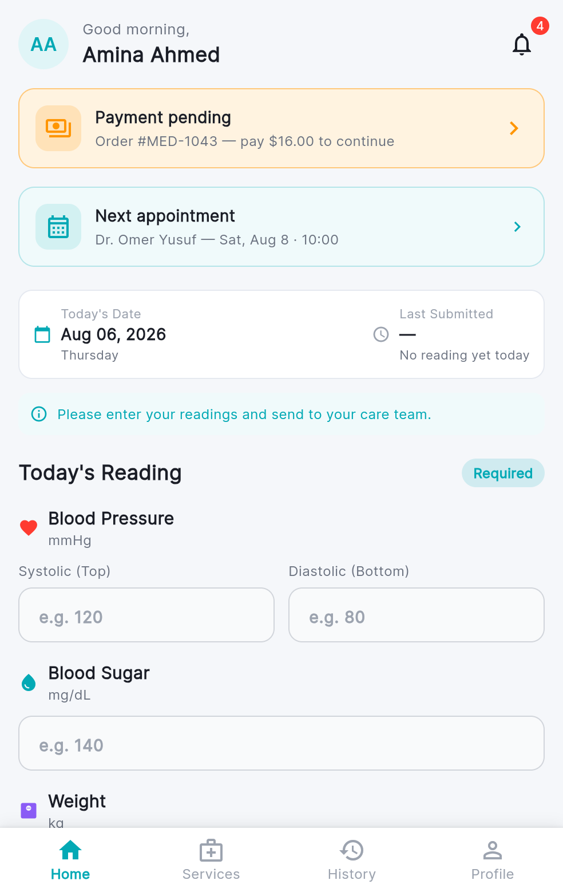
Home: payment banner, next-appointment card, today's reading form.
C. BLE devices — pair, measure, sync
| ID | Action | Expected result | Verify in ERPNext |
|---|---|---|---|
| C-01 | Connect Device → Scan for Devices. | Nearby BLE medical devices listed (name or "Unknown Device" + MAC); layout is clean — no vertical single-character text; compact Connect button. | — |
| C-02 | Scan with Bluetooth OFF. | Clear "turn on Bluetooth" path with a Turn On button — not a silent failure. | — |
| C-03 | Deny Location permission (Android 12+), keep Nearby devices granted, scan. | Scan still works (location is best-effort on Android 12+). | — |
| C-04 | Connect the BP cuff. | Connects; protocol detected (Generic Blood Pressure SIG or Andesfit B180); pairing dialog → paired; appears under My Devices. | Patient Device row created for this device id. |
| C-05 | Simulate server-down during pairing (airplane mode between connect and pair). | Snackbar says "Paired on this phone — will sync to the server later" (honest), not fake success. | — |
| C-06 | Start Measurement; watch the cuff inflate. | Live pressure gauge animates during inflation (Andesfit); final SYS/DIA/Pulse shown; "Saved to your records". | Exactly ONE Daily Reading, Source = BP Device, values match the cuff display. |
| C-07 | Same BP reading sanity: values on phone == cuff display (SYS/DIA/Pulse). | Numbers match exactly (regression: flag-bit bug once dropped pulse or produced garbage like 2025 bpm). | Same values on the Daily Reading. |
| C-08 | Disconnect cuff mid-measurement. | Measure screen flips to disconnected state; no stuck "Measuring…" spinner. | — |
| C-09 | Reconnect the cuff, measure again, then again. | Each measurement saved once. | N measurements → exactly N Daily Readings. No reconnect duplicates. |
| C-10 | Glucose meter with stored history: connect (meter in pairing mode). | Stored readings download automatically (RACP); each appears in History with its original measurement date (not "today"). | One Daily Reading per stored reading, Source = Glucometer, correct historical dates. |
| C-11 | Glucose value sanity (e.g. meter shows 95 mg/dL). | App shows the same value in mg/dL (regression: wrong offset/unit once produced ~0.0009 or byte-shifted values). | Same value on the Daily Reading. |
| C-12 | Fresh finger-stick reading on the connected meter. | Reading arrives live and saves. | One new Daily Reading. |
| C-13 | Smart scale: weigh yourself with the scale connected. | Weight shown in kg; sane value (regression: SFLOAT bug once produced ~2,212,000 kg). | Daily Reading with the weight, Source = Smart Scale. |
| C-14 | After C-06: check History immediately (without app restart). | The device reading is visible right away (regression: previously invisible until next login). | — |
| C-15 | Take a glucose/weight reading while on the BP measure screen path. | Non-BP readings never show a bogus "--/-- mmHg" BP result. | — |
| C-16 | Kill the app mid-connection, reopen, reconnect. | Reconnection is clean; the old connection's teardown can't corrupt the new session. | — |
D. History, charts & weekly summary
| ID | Action | Expected result | Verify |
|---|---|---|---|
| D-01 | History → list view. | All readings newest-first; skeleton while loading. | — |
| D-02 | History → chart view with mixed data. | Chart renders BP + sugar series. | — |
| D-03 | Chart view with weight-only data. | "Not enough data" placeholder instead of a crash (regression: infinite minY threw in fl_chart). | — |
| D-04 | Alerts tab with a high glucose-only reading (e.g. 250 mg/dL from meter). | Appears in Alerts (regression: glucose alerts were dropped by the systolic gate); label shows mg/dL, not "--/-- mmHg". | — |
| D-05 | Weekly Summary with zero readings. | Neutral "No data yet" state — not "0/0 mmHg — Good / Excellent". | — |
| D-06 | Weekly Summary with an elevated week. | Warning-colored status (not everything green). | — |
| D-07 | Adherence stat with server-fetched history only. | Medication adherence is computed correctly (regression: medicine_taken was dropped from the server mapping). | — |
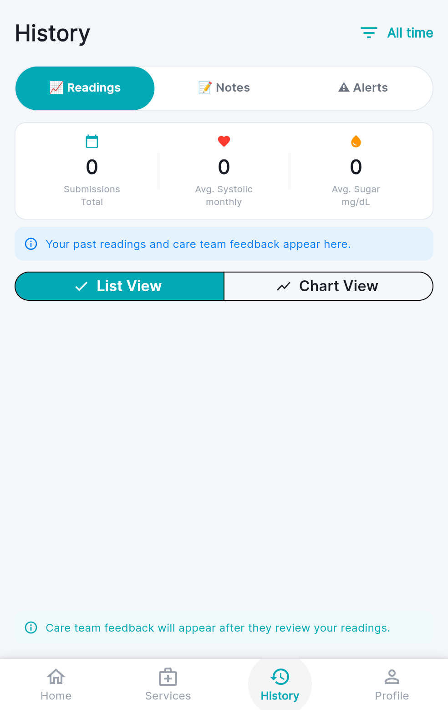
History list (skeletons while loading; chart view guarded for weight-only data).
E. Services — doctors, lab tests, orders, video
| ID | Action | Expected result | Verify in ERPNext |
|---|---|---|---|
| E-01 | Services → Book Doctor. | Doctor list loads (name — department); pick date/time, video or in-person, reason required; Request Appointment → confirmation screen. | New Patient Appointment for the patient (type "Chronic Care Follow Up"). |
| E-02 | Back out of Book Doctor while the doctor list is still loading. | No crash (setState-after-dispose guard). | — |
| E-03 | Popular Categories: tap Heart Care / Chest Care / Diabetes Care / Mental Health. | Booking opens with a filter chip; doctor list shows only matching departments (cardiology / pulmonology / endocrinology / psychiatry). No match → note "No X specialists listed — showing all doctors". Chip ✕ clears the filter. | — |
| E-04 | Profile → My Activity → Appointments card. | Opens My Appointments (list of upcoming), not the booking form; count on the card matches reality (confirmed/Scheduled appointments included). | — |
| E-05 | My Appointments → Book Doctor FAB → book one → back. | List refreshes and includes the new appointment. | New Patient Appointment present. |
| E-06 | Request Lab Test: reason, pick 2–3 tests, preferred date, collection mode (Visit Clinic / Home Sample Collection) → submit. | Success confirmation. | One Lab Test per template, status Draft, patient_sex populated; the note carries the preferred date + collection mode. |
| E-07 | Profile → My Activity → Lab Tests card. | Opens My Lab Tests (list with status chips), not the request form; count matches. | — |
| E-08 | My Lab Tests → tap a scheduled test → Cancel this test → confirm. | Confirmation dialog → test flips to Cancelled chip; list refreshes. | Lab Test status = Cancelled. |
| E-09 | Tap a Completed test. | Details sheet shows dates/reference; no Cancel button (already past cancellable). | — |
| E-10 | Medicine order via prescription photo (camera/gallery). | Upload works; order appears in My Orders as Received. | New Medicine Request with prescription file attached. |
| E-11 | On the address picker sheet in the order flow: dismiss by tapping the scrim / swiping down. | Nothing happens (regression: plain dismissal used to open the Add-Address screen). "Add new address" tile still works. | — |
| E-12 | Order tracking: watch an order move (admin moves it in ERPNext). | Timeline advances; stage order consistent; push notification on each status change. | Notification Log entries created per status change. |
| E-13 | Cancel an order in Received/Under Review/Awaiting Payment. | Cancels; payment fields (amount, method, status) remain intact on the cancelled order. | Status = Cancelled, payment fields preserved. |
| E-14 | Confirm receipt on a delivered order. | Confirmed; delivery timeline + fee breakdown preserved (regression: fields were dropped). | received_confirmed = 1, timeline fields intact. |
| E-15 | Video Visits: join a scheduled visit (doctor notified), end it. | Join notifies the practitioner; End completes the session; repeated joins/ends are safe (idempotent). | Telemedicine Session status transitions correct. |
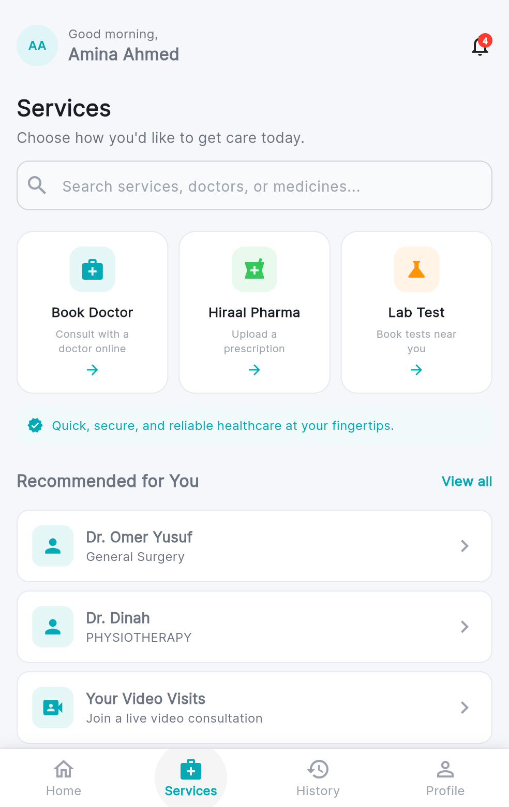
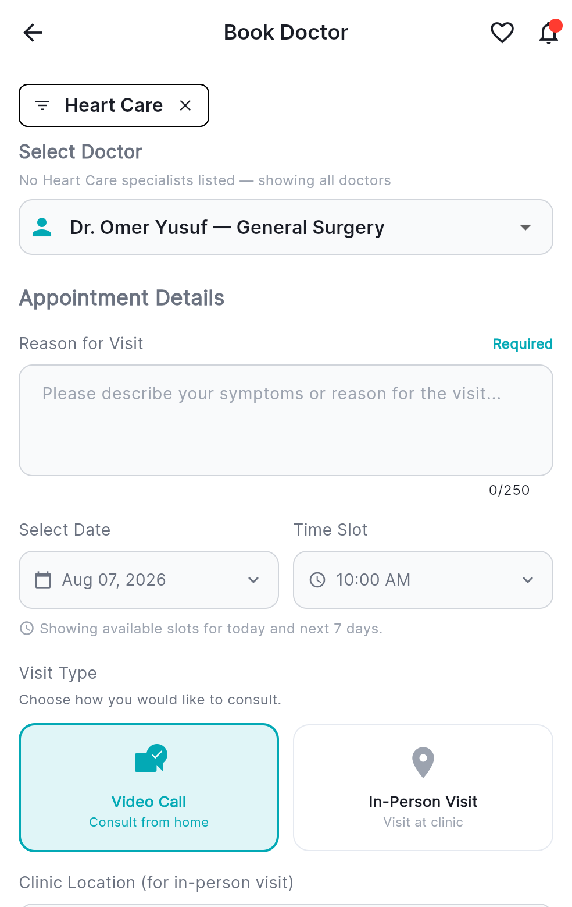
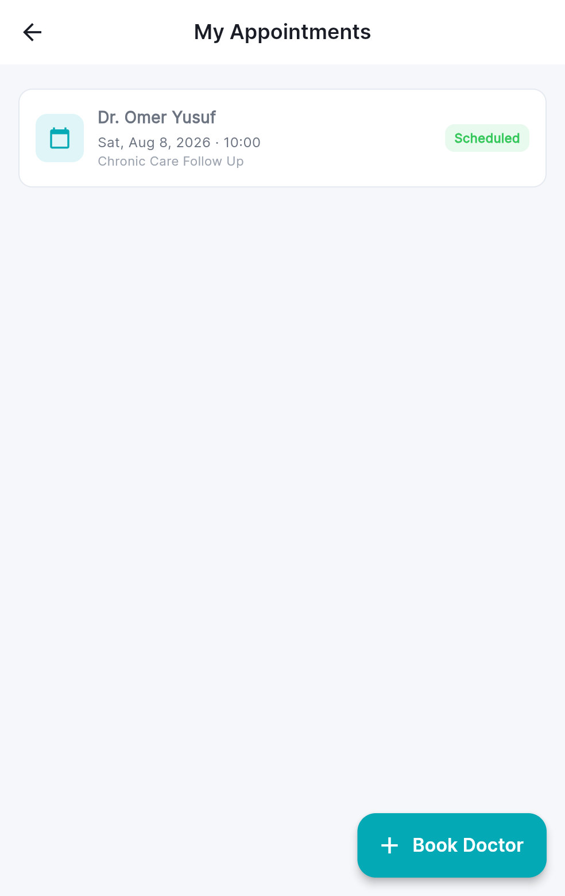
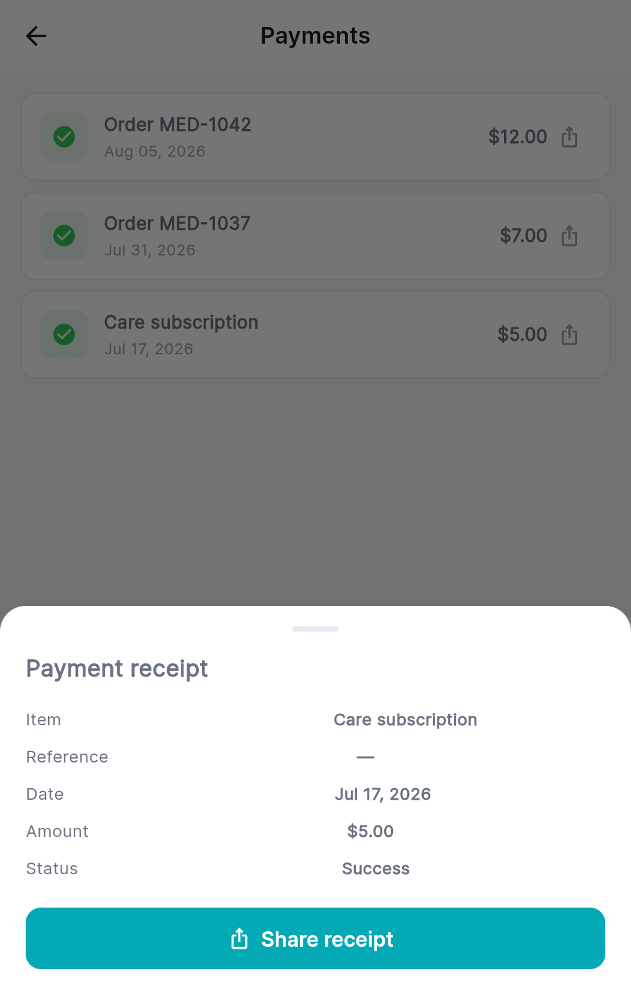
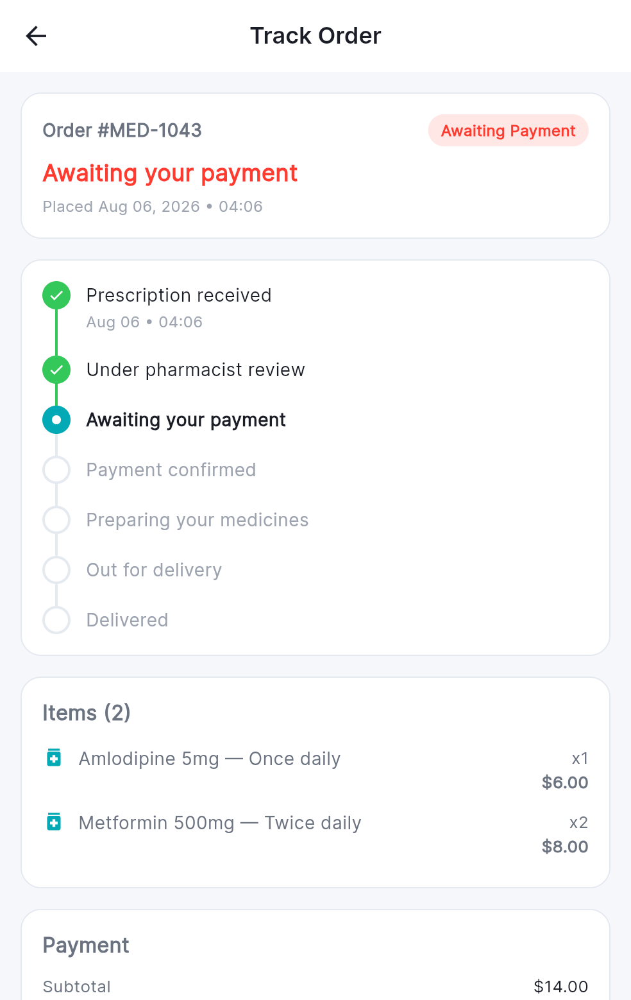
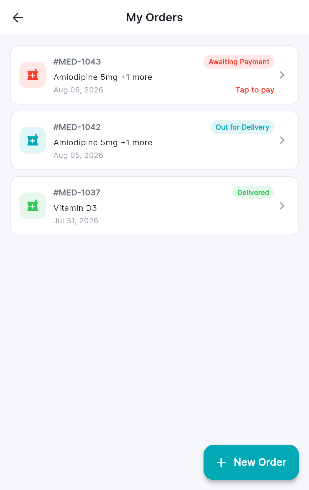
Services → category-filtered booking (fail-open note shown) → My Appointments / My Lab Tests / order tracking / My Orders.
F. Payments & receipts
| ID | Action | Expected result | Verify in ERPNext |
|---|---|---|---|
| F-01 | Pay for an Awaiting-Payment order: tap Pay. | Immediately shows the waiting screen (radar pulse, amount, "Request sent to <number>", countdown pill, 3-step guide) — while the request is in flight. | — |
| F-02 | Approve on the phone. | Waiting screen flips to the success screen automatically (polling every 3s; no need to tap "I've paid"). | Order Paid; payment_reference recorded. |
| F-03 | Decline on the phone. | Failed screen with a friendly title ("Payment declined") and Try again / Back. No raw gateway codes as the main text. | Order stays Awaiting Payment; no Subscription/Payment row. |
| F-04 | Approve slowly (>15 s after the prompt). | Still works (initiation timeout is 120s — a slow approval must NOT show "couldn't start payment" while the charge completes). | Order Paid. |
| F-05 | Tap Pay, then "Cancel and try again" while the prompt is live, then approve the old prompt anyway. | No double charge: re-initiation returns the same in-flight transaction instead of starting a new one. | One Mobile Payment Transaction Log per attempt; no orphan paid transaction. |
| F-06 | Close the app after approving; reopen → My Orders. | Order shows Paid (lazy reconcile on fetch / cron settles it). | Order Paid even though the app stopped polling. |
| F-07 | Second payment: check the form. | Wallet number pre-filled and the previous method pre-selected (remembered wallet). | — |
| F-08 | Profile → Payments. | Unified history: subscription payments + paid orders, newest first, with amounts/dates/references. | Matches Subscription Payment + paid Medicine Request rows. |
| F-09 | Tap a payment → Share receipt. | Receipt sheet with details; Share produces a plain-text receipt via the OS share sheet. | — |
| F-10 | Let the waiting countdown expire (~4 min) without approving. | "Taking longer than usual…" reassurance replaces the countdown; polling stops; no crash. | If approved later, the cron/reconcile still settles it. |
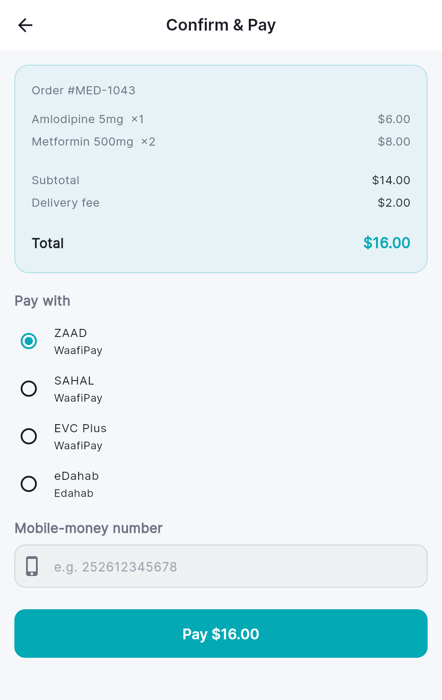
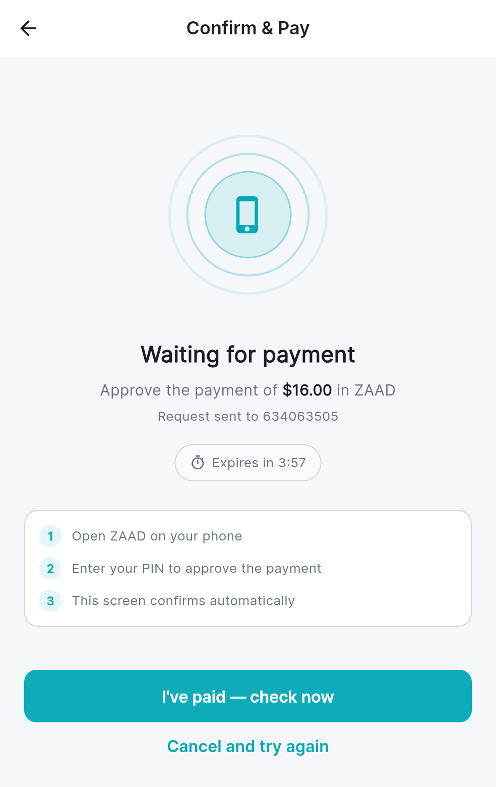
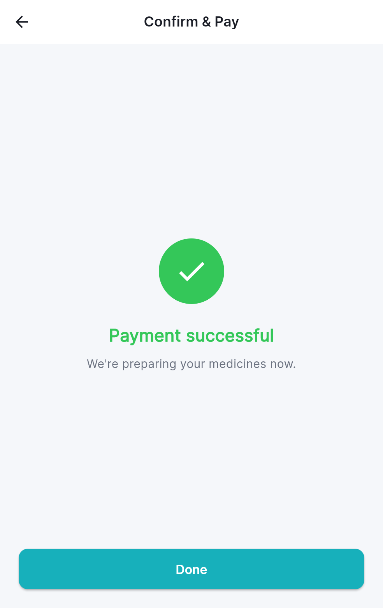
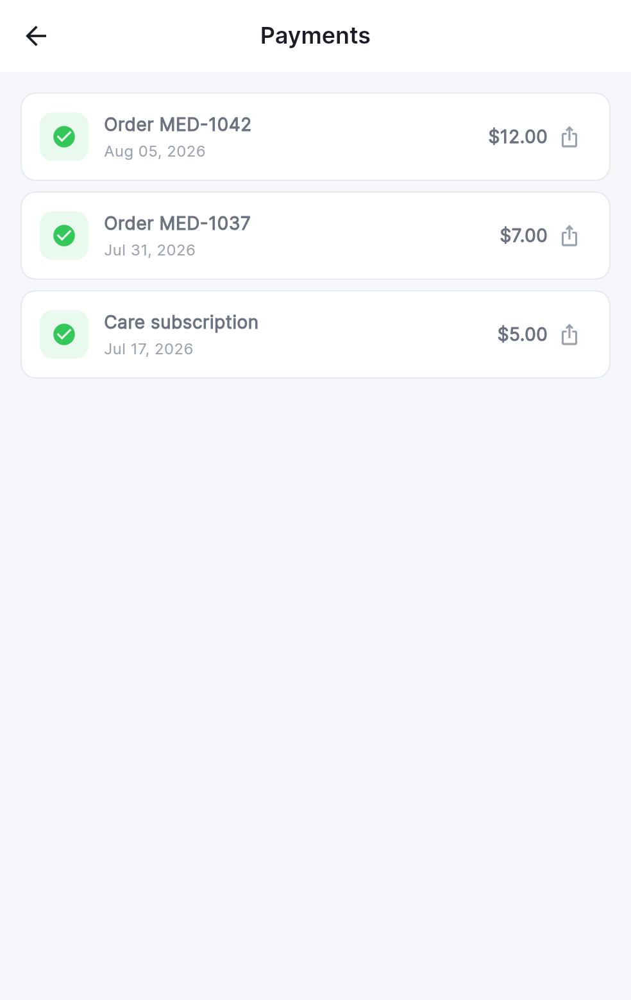

Payment flow: form → waiting (pulse, countdown, steps) → auto success; Payments history + shareable receipt.
G. Subscription & paywall
| ID | Action | Expected result | Verify in ERPNext |
|---|---|---|---|
| G-01 | New patient without a plan. | Paywall blocks the app (no way into Home); plans show Standard $5 / Premium $10 (different prices). | — |
| G-02 | Subscribe & Pay a plan, approve on the phone. | Waiting → success automatically; app unlocks to Home. | Care Subscription Active + Subscription Payment with a valid payment_method (Zaad/eDahab — never "Mobile Money"). |
| G-03 | Paywall with the server unreachable (airplane mode), tap Subscribe. | Error state shows a Retry button that recovers the screen (no sign-out needed). | — |
| G-04 | Decline the subscription payment on the phone. | Friendly failed screen; Try again returns to the form. | Subscription stays Overdue; no payment row. |
| G-05 | Existing subscriber signs in on a new device. | Goes straight to Home (not the "account created" success screen). | — |
| G-06 | Staff-suspended subscription: patient opens the app. | Paywall shows it; payment reactivates it (no "No subscription found" loop). | Subscription back to Active after payment. |
H. Profile & settings
| ID | Action | Expected result | Verify |
|---|---|---|---|
| H-01 | Profile → Personal Information. | No fabricated "null@hiraal.com" email row; initials never crash. | — |
| H-02 | Health Information / Medical History: open and quickly back out during load. | No crash (mounted guards). | — |
| H-03 | Addresses: add one, then delete one, then add again. | Add failure shows an error snackbar (not silent); no duplicate-id weirdness (mock mode); server addresses show correct type icons (home/work). | Address records on the Patient. |
| H-04 | Privacy & Security: enable biometric login (then leave the screen mid-prompt). | Success/failure both handled; no setState-after-dispose. | — |
| H-05 | Privacy & Security: Export My Data. | Produces the export (server export_my_data endpoint). | — |
| H-06 | Settings → Reminders: enable Medication reminder at 08:00, Reading reminder at 21:00. | Times shown ("Daily at 08:00"); time picker works; notifications arrive at the set times (Android). | — |
| H-07 | Settings → Accessibility → Large text ON. | Whole app text scales ~1.2×; layouts don't break (check Home, payment screens, My Orders). | — |
| H-08 | Settings: About shows version/build; no dead toggles (units/language rows were removed). | Only functional controls remain. | — |
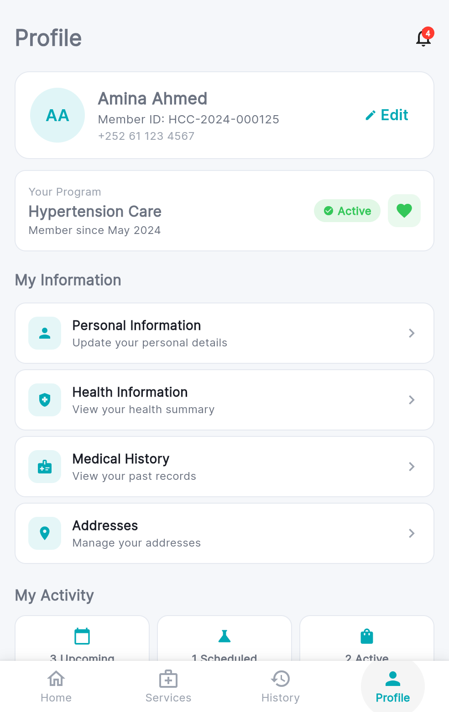
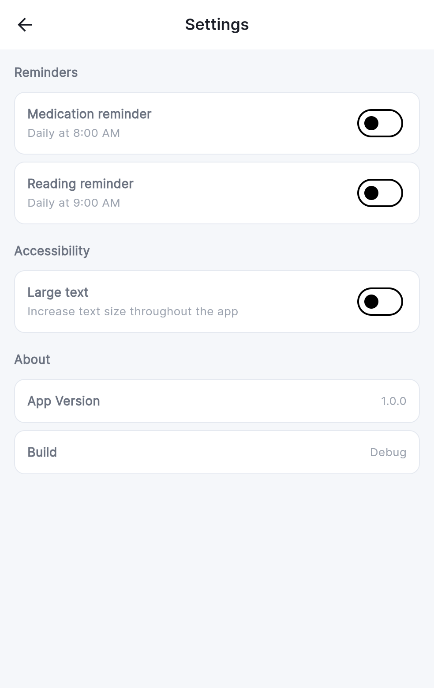
Profile and Settings (reminders, large text, about).
I. Notifications
| ID | Action | Expected result | Verify in ERPNext |
|---|---|---|---|
| I-01 | Open Notifications with a mix of order updates, messages, reminders. | Grouped under Today / Yesterday / This week / Older; correct icons per type (paid ✓ green, order 📦, awaiting-payment 💲, reminder ⏰, real alerts ⚠ only). | — |
| I-02 | Unread items. | Colored dot + bold title on unread only; read rows dim. | — |
| I-03 | Tap an order notification. | Opens that order's tracking screen; the item marks read; the bell badge decrements. | Notification Log read = 1. |
| I-04 | "Mark all read" (app bar). | All items read; badge clears; failure reverts (airplane mode test). | read = 1 on all. |
| I-05 | Pull-to-refresh; empty account view. | Refresh works; empty state shows the friendly "No notifications yet" panel. | — |
| I-06 | Receive a push with the app closed (order status change by admin). | One system notification (not duplicated); tapping opens the app. | One Notification Log entry. |
| I-07 | Timestamp on a just-arrived notification. | "just now"/"N min ago" — never a negative like "-5 min ago". | — |
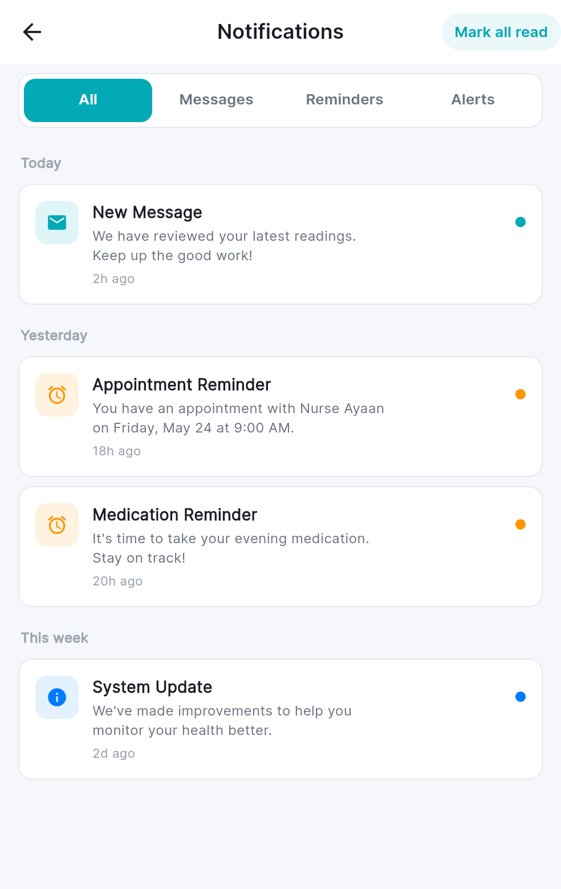
Notifications: date groups, per-type icons, unread dots, mark-all-read.
J. Offline & sync
| ID | Action | Expected result | Verify in ERPNext |
|---|---|---|---|
| J-01 | Airplane mode with the app open. | Amber offline banner appears: "You're offline — readings will be saved on this phone". | — |
| J-02 | Take 2 readings offline, go back online. | "Back online — syncing…" toast; readings upload automatically; no duplicates. | Exactly 2 new Daily Readings. |
| J-03 | Offline → Sync screen (from offline/banner navigation). | Shows truly pending items; runs the real sync; per-item Sent/Not-sent; honest "Sync Incomplete" state on failure. When nothing is pending: "You're Up to Date". | Rows land once each. |
| J-04 | Pending count consistency. | Offline screen count == provider badge == actual pending rows (all key off sync_status, not the display status). | — |
K. Alerts
| ID | Action | Expected result | Verify in ERPNext |
|---|---|---|---|
| K-01 | Submit a critical BP reading (e.g. 186/126). | High-BP alert screen appears with guidance; contact care team options work. | Daily Reading Risk = Critical; Chronic Care Alert created + linked Nurse Task. |
| K-02 | Contact Care Team screen: open the message composer twice. | No leaked controllers (memory); sending works. | — |
L. Sessions & error handling
| ID | Action | Expected result |
|---|---|---|
| L-01 | Force a 401 (expire the session server-side), then use the app. | Session-expired screen; no endless retry loops; no sid ever appears in URLs/logs. |
| L-02 | Corrupt the local session data (dev: clear DB files) and cold-start. | Falls back to welcome/sign-in — never hangs on splash. |
| L-03 | Double-tap async actions (login, logout, pay, book). | Single execution — busy guards everywhere. |
M. Accessibility & resilience quick pass
| ID | Action | Expected result |
|---|---|---|
| M-01 | System font = largest, plus in-app Large text ON. | All screens remain usable; no overflow/red boxes. |
| M-02 | Rotate / resize (tablet or web). | Layouts adapt; payment waiting/result screens stay centered. |
| M-03 | Airplane-mode cold start. | App opens to a usable state with offline banner; no crash from failed fetches. |
N. Secondary screens & edges
| ID | Action | Expected result |
|---|---|---|
| N-01 | Health Tips screen. | Tips load/display; no broken images or dead links. |
| N-02 | "No data logged today" reminder nudge screen. | Log My Data Now → home form; Remind Me Later dismisses. |
| N-03 | My Devices: delete a paired device (confirm dialog). | Removed from the list; no zombie connection state. |
| N-04 | Contact Care Team (from a high-BP alert). | Composer opens/sends correctly on repeat use (no leaked controllers). |
| N-05 | Error screen retry paths (network-down navigation). | Retry works; Back behaves sensibly (no popping to a black screen). |
Part 1B — Clinical staff experience (ERPNext desk)
These tests run on the desk at https://uat.dagaartech.com, one account per role. Custom roles: Chronic Care Nurse / Doctor / Admin / Pharmacist / Lab Tech. Desk pages live under /app/<page-name> (clinic-dashboard, alert-queue, daily-readings, patient-management, telemedicine-waiting-room, analytics-dashboard).
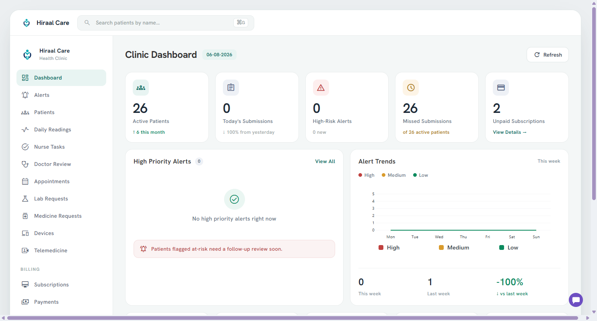
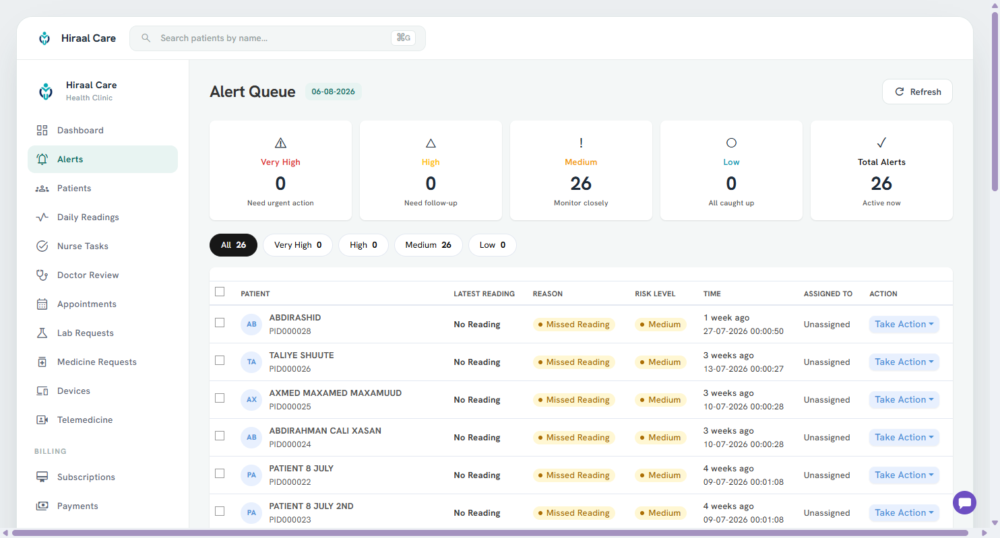
Clinic Dashboard (KPIs, priority alerts, trends) and the Alert Queue.
1B.0 Staff setup (once)
| ID | Action | Expected result |
|---|---|---|
| 1B-01 | Create/confirm one user per role (Nurse, Doctor, Admin, Pharmacist, Lab Tech) and a practitioner linked to the doctor's user. | Each role logs in and lands on its permitted desk. |
| 1B-02 | As each staff role, try opening pages outside your scope (e.g. pharmacist opens clinic-dashboard). | Denied cleanly — no tracebacks. |
1B-A. Nurse — alert triage & daily monitoring
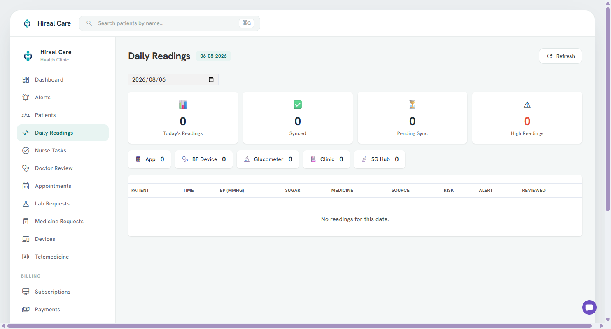
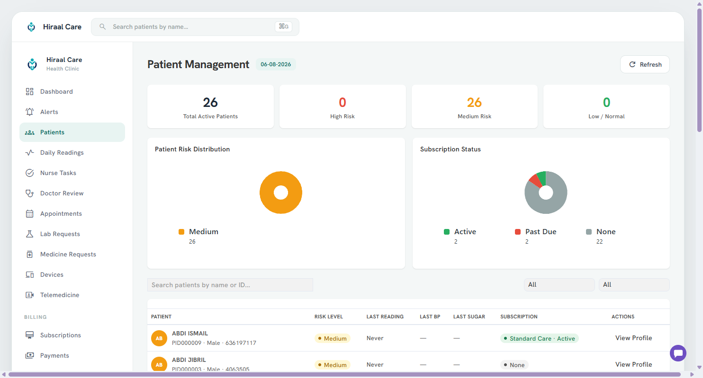
Daily Readings page and Patient Management (registry + profile drawer).
| ID | Action | Expected result | Verify |
|---|---|---|---|
| 1B-A1 | Open Alert Queue after a patient submits a High/Critical reading. | Alert appears, severity-sorted (Very High → Low), with patient, latest reading, reason, time. | Chronic Care Alert row exists (Open). |
| 1B-A2 | Take Action → Mark Reviewed. | Alert resolves; resolved_at stamped; disappears from the open queue. | Status = Resolved. |
| 1B-A3 | Take Action → Escalate to Doctor. | Alert becomes Escalated AND a Doctor Review is auto-created (priority = alert level, alert linked). | Doctor Review exists, review_status "Awaiting Review". |
| 1B-A4 | Take Action → Add Note. | Note saved on the alert (resolution_note). | Note visible on the alert record. |
| 1B-A5 | Auto-created Nurse Task from the alert (when auto-assign is on in Chronic Care Settings). | Task exists, type mapped from alert type, due today, status Pending. | Nurse Task list. |
| 1B-A6 | Complete the task (set Completed). | completed_at stamped. | — |
| 1B-A7 | Leave a task Pending past its due date; run the daily job or wait. | Status flips to Overdue (mark_overdue_nurse_tasks). | — |
| 1B-A8 | Open Daily Readings page; switch dates. | KPIs (total/synced/pending/high), source breakdown, per-reading risk pills; "No" medication shows as No (not ✅); Critical = red pill. | Counts match Daily Reading list. |
| 1B-A9 | Open Patient Management; filter by risk + subscription; search; open a patient profile. | Cards, pies, filters work; profile drawer shows 30-day trend, active alerts, subscription, devices, last 5 doctor reviews, 7-day med adherence. | — |
| 1B-A10 | Missed-reading job: patient with no reading for 2+ days. | Daily job creates a Medium "Missed Reading" alert (once — no duplicates on re-run) + Follow Up task. | Alert + task exist. |
1B-B. Doctor — reviews & telemedicine
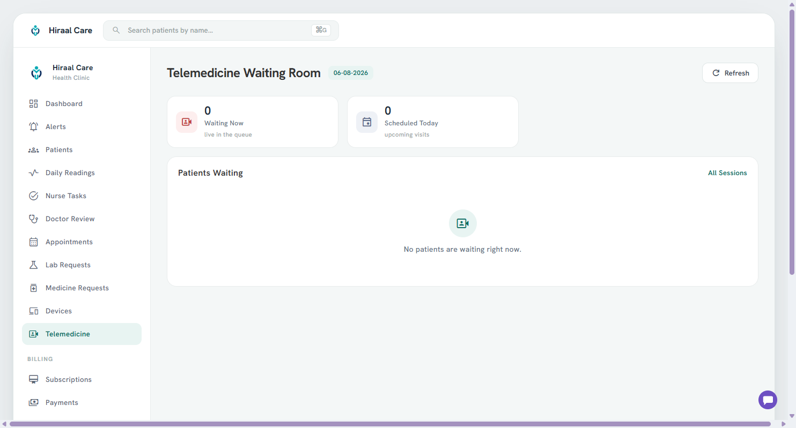
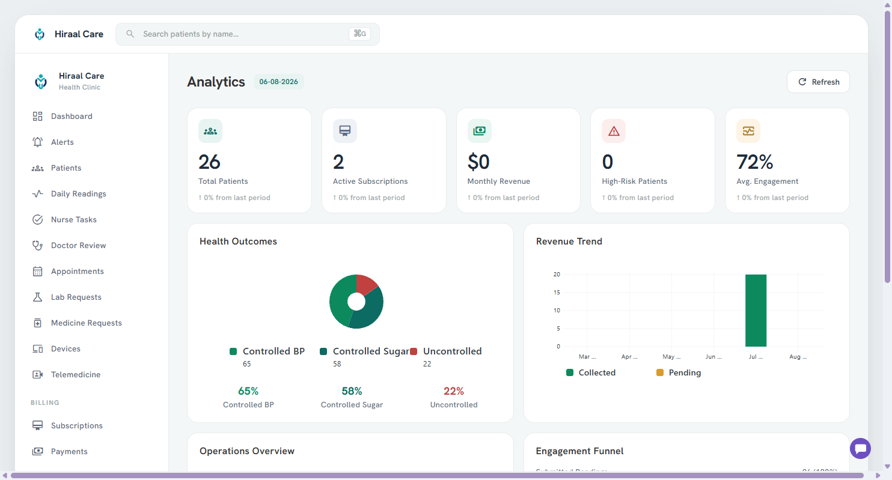
Telemedicine waiting room and the doctor analytics dashboard.
| ID | Action | Expected result | Verify |
|---|---|---|---|
| 1B-B1 | Open the Doctor Review created in 1B-A3. | 7-day clinical summary auto-computed (latest/avg BP & sugar, missed days, adherence). | Fields populated on the review. |
| 1B-B2 | Fill assessment + follow-up interval; set review_status = Reviewed. | reviewed_at stamped; next_review_date set from the interval. | — |
| 1B-B3 | Leave a Very High alert Open >30 min (default escalation window). | Hourly job auto-escalates and creates a Doctor Review. | Alert Escalated; review exists. |
| 1B-B4 | Telemedicine: patient joins from the app. | Session flips Scheduled → In Progress; doctor gets a desk notification + push (+SMS) — once, not per rejoin. | Session start_time set; Notification Log for the doctor. |
| 1B-B5 | Open Telemedicine Waiting Room. | Waiting/in-progress sessions first, today's scheduled below; auto-refresh every 20s. | — |
| 1B-B6 | Join Call, then Mark Done. | meeting_url opens; session completes with end_time + duration. | Status Completed. |
| 1B-B7 | Leave a session In Progress >3h. | Hourly auto-close completes it. | — |
| 1B-B8 | Open Analytics Dashboard (doctor-only page). | Loads; note: some figures (engagement score, funnel %) are placeholders — flag, don't report as failures. | — |
1B-C. Pharmacist — order fulfillment
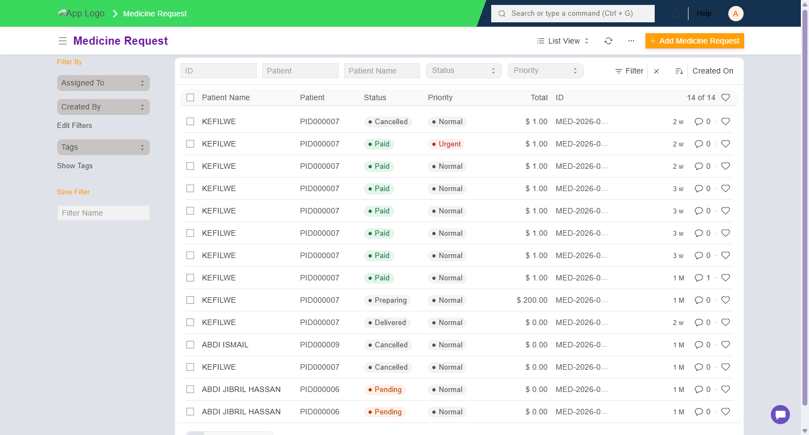
The Medicine Request list the pharmacist works from.
| ID | Action | Expected result | Verify |
|---|---|---|---|
| 1B-C1 | Open the new Medicine Request (from the patient's prescription order). | Prescription image attached; items listed. | — |
| 1B-C2 | Price each line (unit price × quantity, stock flag) and move to Awaiting Payment. | Totals compute (amount + delivery fee + tax); patient gets the "priced and ready" notification + push; patient app shows the pay banner. | Status + amounts on the record. |
| 1B-C3 | After the patient pays: move Paid → Preparing → Out for Delivery → Delivered. | Each move timestamps (preparation_started/dispatched_at/delivered_at) and notifies the patient. | Notification Log per transition. |
| 1B-C4 | Try clinical APIs as pharmacist (e.g. alert queue). | Denied — pharmacist works only via Medicine Request desk forms (by design). | — |
1B-D. Lab Tech — lab work
| ID | Action | Expected result | Verify |
|---|---|---|---|
| 1B-D1 | Open the patient's requested Lab Test (standard Healthcare flow): collect sample → enter result → submit. | On submit, a "Lab Follow Up" Nurse Task is auto-created (due today). | Nurse Task exists. |
| 1B-D2 | Note role gap: the Chronic Care Lab Tech role has no custom permissions in the module. | Lab work uses stock Healthcare permissions — flag for provisioning, not a failure. | — |
1B-E. Admin — billing, devices, oversight
| ID | Action | Expected result | Verify |
|---|---|---|---|
| 1B-E1 | Care Subscription list: find the patient's subscription. | Status/fee/next billing/total collected match the app's claims. | — |
| 1B-E2 | Manually settle a Cash payment via pay_subscription. | Works for Cash/Bank Transfer only; any other method is refused (no free mobile-money activation). | Subscription Payment created, status Active. |
| 1B-E3 | Patient Device registry: check a paired device. | Status Online; battery <20% flips to Low Battery; >2h without sync flips Offline (hourly job). | — |
| 1B-E4 | Reports: Patient Summary, Clinical Summary, Subscription, Revenue, Device Status. | All load with real numbers — Med Adherence is not all-zero; revenue matches Subscription Payment rows. | — |
| 1B-E5 | Clinic Dashboard. | KPIs live (medicine tiles show real counts, today's appointments, alert trend); "View All" links open filtered lists. | — |
1B-F. Cross-side realtime checks
| ID | Action | Expected result |
|---|---|---|
| 1B-F1 | Patient submits a Very High reading while the desk is open. | Realtime alert event reaches desk users without a page refresh. |
| 1B-F2 | Nurse task assigned. | Realtime event to the assignee's user. |
| 1B-F3 | Patient joins a video visit. | Doctor notified (desk + push + SMS) exactly once. |
Part 2 — ERPNext module tests
Run these as Admin on UAT (desk + bench). API-level checks can use curl against https://uat.dagaartech.com with a patient session/API key.
N. Auth / OTP API
| ID | Test | Expected |
|---|---|---|
| N-01 | POST /api/method/hiraal_emr.api.request_otp with {mobile, channel:"sms"} for a registered number. | {success:true, channel:"sms"}; SMS arrives; OTP cached 5 min. |
| N-02 | Same with {email, channel:"email"} for a registered patient's email. | Email sent (masked sent_to in response). Unregistered email → still success:true but nothing is emailed (no user enumeration). |
| N-03 | verify_otp with the correct code, then replay the same code. | First: success + patient api_key/api_secret issued. Replay: fails (code invalidated). |
| N-04 | verify_otp with a wrong code; expired code (>5 min). | Clean failure both times. |
| N-05 | Self-register a new patient via the app flow (request_otp → verify → self_register). | Patient + user created, Active; duplicate phone returns the existing account. |
O. Readings ingestion
| ID | Test | Expected |
|---|---|---|
| O-01 | submit_reading with a manual BP reading incl. reference_id. | Daily Reading created; Source "App"; duplicate reference_id returns the existing row (idempotent). |
| O-02 | Submit with reading_date/reading_time set to yesterday 08:30. | Row is stamped with that date/time (BLE store-and-forward support), not today. |
| O-03 | Submit with source = "Smart Scale" / "BP Device" / "Glucometer" / "5G Hub". | All accepted (valid Select options — needs the migrated doctype). |
| O-04 | Critical reading (186/126). | risk_level Critical + Chronic Care Alert + Nurse Task auto-created; audit log entries written (exactly one per action — no double audit rows). |
| O-05 | get_my_readings as the patient. | Only that patient's rows; medicine_taken present in the payload. |
| O-06 | Andesfit 4G ingestion endpoint with a device payload. | Accepted, stored with source "5G Hub"; device gets the expected OK response (not a Select-validation error). |
P. Payments & the settlement chain
check_my_order_payment/check_my_payment), the real-time hook (payment_hooks.on_mobile_payment_update), the 5-minute cron (reconcile_mobile_payments), and lazy reconcile in get_my_orders. Test that each path settles and none double-settles.| ID | Test | Expected |
|---|---|---|
| P-01 | App: pay an order and approve quickly. | Poll path settles: order Paid, one Subscription/Transaction record. |
| P-02 | Pay, approve after closing the app. | Real-time hook or cron settles it within ~5 min; order Paid with no app involvement. |
| P-03 | Bench: bench execute hiraal_emr.tasks.reconcile_mobile_payments with a Completed-but-unsettled transaction present. | Settles the order/subscription; safe to run repeatedly (idempotent). |
| P-04 | Subscription Payment records after P-01/P-02. | payment_method is one of Zaad/eDahab/Visa/Mastercard/Cash/Bank Transfer — never "Mobile Money"; insert never throws Select validation. |
| P-05 | Underpayment: force a Completed transaction whose amount < order total. | NOT settled; "Payment Reconciliation Mismatch" Error Log entry. Overpayment settles. |
| P-06 | Double initiation: start two pay attempts for the same order. | Second attempt returns the in-flight transaction ("already in progress") — no second wallet charge. |
| P-07 | Settlement while the hook throws (e.g. temporarily break a downstream field in staging). | The gateway's own save still commits (hook is exception-safe; failure lands in Error Log, doesn't roll back the transaction log). |
| P-08 | Gateway returns status in a different case (e.g. "completed"). | Poll endpoints normalize to canonical Completed/Failed/Pending. |
| P-09 | Admin: run /api/method/hiraal_emr.api.fcm_diagnostics?user=<patient-login>&send_test=1. | JSON shows google_auth_installed, service_account configured, access_token_ok, project_id = hiraal-life-care, registered_token_count > 0, and a real test push arrives (status 200). |
Q. Orders lifecycle
| ID | Test | Expected |
|---|---|---|
| Q-01 | Move an order through Received → Under Review → Awaiting Payment → Paid → Preparing → Out for Delivery → Delivered (as staff). | Each transition creates a patient Notification Log entry + push (hooks registered — doc_events merge fix). |
| Q-02 | Patient cancels at each early stage; then tries after Paid. | Allowed Received/Under Review/Awaiting Payment; refused after Paid with a clear error. |
| Q-03 | Patient confirms receipt of a delivered order. | received_confirmed set; order fields intact. |
| Q-04 | get_my_orders with an unpaid-but-referenced order. | Lazy reconcile settles it if the gateway says Completed; response reflects Paid immediately. |
R. Lab tests & appointments
| ID | Test | Expected |
|---|---|---|
| R-01 | request_lab_test for a patient with no sex on file. | Inserts fine — patient_sex falls back to "Other". |
| R-02 | Request 3 templates; fail the 2nd (staging: disable one template mid-flight). | Response names exactly which templates failed — no silent duplicates on retry. |
| R-03 | cancel_my_lab_test on a Draft test, then on a Completed test. | Draft → Cancelled; Completed → refusal error. Another patient's test → PermissionError. |
| R-04 | get_my_lab_tests / get_my_appointments. | Scoped to the caller; correct fields; newest/soonest first. |
| R-05 | Book an appointment for a practitioner (any department). | Appointment created with a valid Appointment Type link ("Chronic Care Follow Up") — no LinkValidationError. |
S. Subscriptions & billing
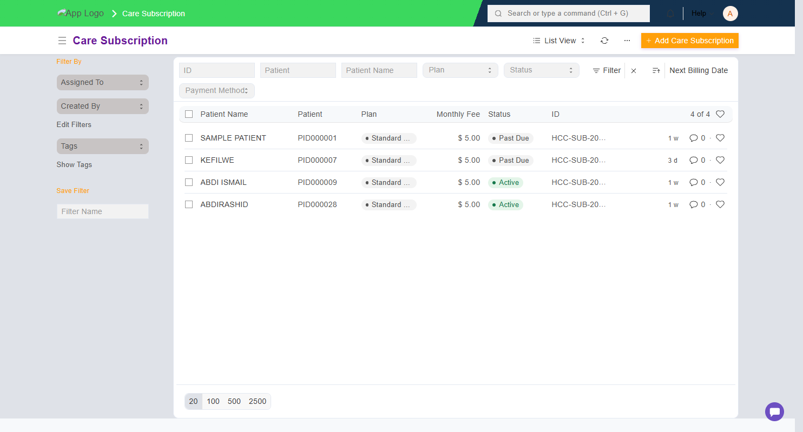
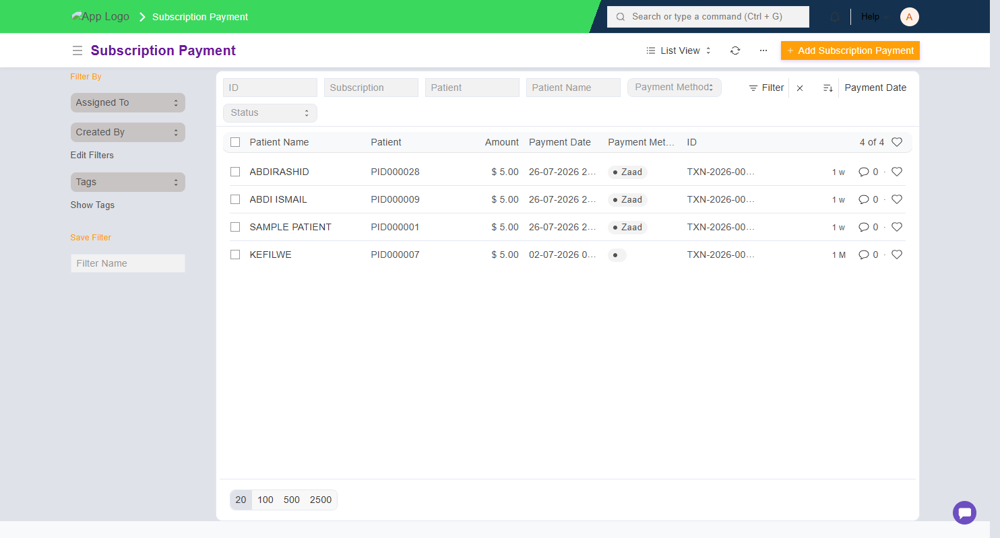
Care Subscriptions and the Subscription Payment records.
| ID | Test | Expected |
|---|---|---|
| S-01 | App subscribes and pays (any plan). | Subscription Active; Subscription Payment valid; next_billing_date +1 month; total_collected incremented once. |
| S-02 | Run settlement twice for the same transaction (poll + cron overlap). | Exactly one Subscription Payment per reference_id. |
| S-03 | Desk: staff use pay_subscription with method "Zaad". | Refused — manual settlement only for Cash/Bank Transfer. |
| S-04 | Billing cron process_subscription_billing for a due subscription. | Reminder sent (SMS/push); no silent auto-charge. |
| S-05 | Suspended subscription pays via app. | Payment accepted; subscription reactivates. |
T. Notifications & push
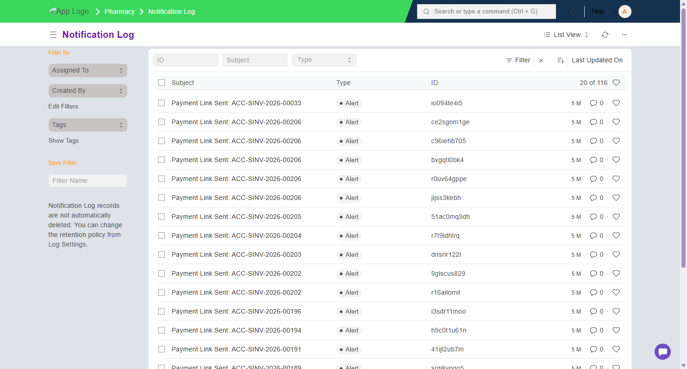
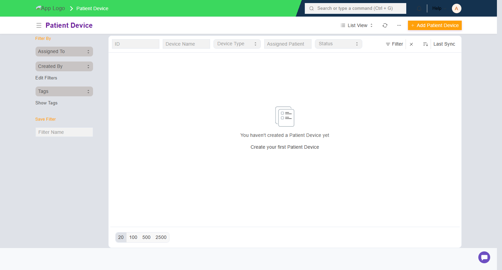
Notification Log entries and the Patient Device registry.
| ID | Test | Expected |
|---|---|---|
| T-01 | Register a push token from the app (login); check Hiraal Push Token list. | One row per device; enabled=1; last_seen updates on re-register. |
| T-02 | Send a patient notification from the desk. | Push arrives once; token failures disable stale tokens; logged only. |
| T-03 | Logout, then send again. | No push to the signed-out device (enabled=0). |
| T-04 | Payment completion push data payloads. | Order flow sends type=payment_complete, order=<name>; subscription flow sends type=subscription_payment_complete, subscription=<name>. |
U. Permissions & security
| ID | Test | Expected |
|---|---|---|
| U-01 | As a patient user: open another patient's record / order / lab test / notifications via direct API calls with their id. | PermissionError everywhere (incl. get_notifications — the closed IDOR). |
| U-02 | As a patient: open clinic pages (Clinic Dashboard, Alert Queue). | Denied. |
| U-03 | As staff (nurse/doctor/admin): same pages. | Open normally. |
| U-04 | Guest (logged out): call any non-guest endpoint. | Authentication error; only request_otp/verify_otp/self_register are guest-open. |
V. Dashboards & reports
| ID | Test | Expected |
|---|---|---|
| V-01 | Clinic Dashboard medicine tiles. | Counts match real lists (Received+Under Review shown as pending; Out for Delivery as dispatched) — no permanent zeros. |
| V-02 | Alert Queue page (desk). | Loads without a query-validation error; Very High alerts sort first, then newest. |
| V-03 | Daily Readings page. | Medication column: "No" shows as No (not ✅); Critical readings get a red pill. |
| V-04 | Patient Summary report — Med Adherence column. | Real percentages (not all 0%). |
| V-05 | Risk-level vocabulary everywhere. | Readings use Normal/Medium/High/Critical; alerts use Low/Medium/High/Very High — no mixing. |
W. Scheduled jobs
| ID | Test | Expected |
|---|---|---|
| W-01 | Scheduled Job Log on UAT. | reconcile_mobile_payments runs every 5 min; daily jobs (missed-reading alerts, subscription billing, overdue nurse tasks) and hourly jobs run. |
| W-02 | Sync-queue hygiene after successful syncs. | sync_queue rows are deleted on success — table doesn't grow forever. |
Part 3 — Regression checklist (this release's fixed bugs)
Quick pass to confirm the fixed bug classes stay fixed. One line each — verify after every new build.
| # | Bug (fixed) | Quick check |
|---|---|---|
| R-01 | BLE glucose parsed at wrong byte offset / wrong units bit | C-11: meter value == app value == server value (mg/dL) |
| R-02 | Weight decoded as SFLOAT (millions of kg) | C-13: sane kg value |
| R-03 | BP flags shifted (pulse dropped / garbage pulse) | C-07: pulse present and correct |
| R-04 | Generic glucose meters never got RACP | C-10: stored history downloads |
| R-05 | RACP CCCD never enabled (ATT 0x81) | C-10/C-12 pass on strict firmware |
| R-06 | Unfiltered scan blocked by neverForLocation on Android 12+ | C-01: devices listed |
| R-07 | Reconnect leaked old connection / corrupted new session | C-16 |
| R-08 | Duplicate readings on reconnect | C-09: N measurements = N rows |
| R-09 | Device timestamps discarded | C-10: historical dates kept |
| R-10 | Manual offline readings never synced | B-04/J-02 |
| R-11 | Sync screen faked syncing | J-03 |
| R-12 | Avatar initials RangeError on spaced names | A-11 |
| R-13 | "Mobile Money" Select crash on subscription settlement | P-04/G-02 |
| R-14 | patient_sex MandatoryError on lab requests | R-01 (module) |
| R-15 | Nonexistent statuses ("Pending" orders, "Dispatched", "Very High" readings, Open-only appointments) | V-01, V-05, activity cards match lists |
| R-16 | doc_events overwritten (order notifications dead) | Q-01 |
| R-17 | Alert Queue broken by field() order_by on v15 | V-02 |
| R-18 | 15s timeout killed slow wallet approvals | F-04 |
| R-19 | Push-listener throw killed auto-polling | F-02 |
| R-20 | Wrong country codes (Oman/Sweden) | A-07 |
| R-21 | Categories all opened the same unfiltered booking | E-03 |
| R-22 | Activity cards opened request forms instead of lists | E-04/E-07 |
| R-23 | setState-after-dispose crashes | E-02, H-02, H-04 |
| R-24 | Connect Device tile vertical-text layout | C-01 |
| R-25 | sid in URLs / FCM token in logs | L-01 + log review |
Part 4 — Known limitations & bug reporting
Known limitations (by design or pending work)
| Area | Limitation |
|---|---|
| Appointments | Requires a consulting charge configured per practitioner ("OP Consulting Charge"), or booking errors. Admin setup task. |
| Auto-renewal | No silent mobile-money auto-debit — patients get a pay reminder instead. Intended. |
| Reminders | Daily local notifications use inexact alarms (no exact-alarm permission) — fire time can drift a few minutes under battery optimization. |
| Payments | Subscription push completion can't be matched to a specific transaction id server-side yet (payload carries the subscription name only). |
| Analytics page | Some desk analytics metrics are placeholder values (engagement score etc.). |
| iOS | Not currently built/tested (plist keys are in place). |
How to report a problem
For each failure capture:
1. Test ID (e.g. C-10) and the exact steps taken.
2. Expected vs actual.
3. Screenshot or screen recording (especially payment/measuring screens).
4. Exact values: reading numbers / order id / amount / time (for server tracing).
5. Phone model + Android version + build date of the APK.
6. ERPNext side: Error Log entries + the relevant doctype record id.